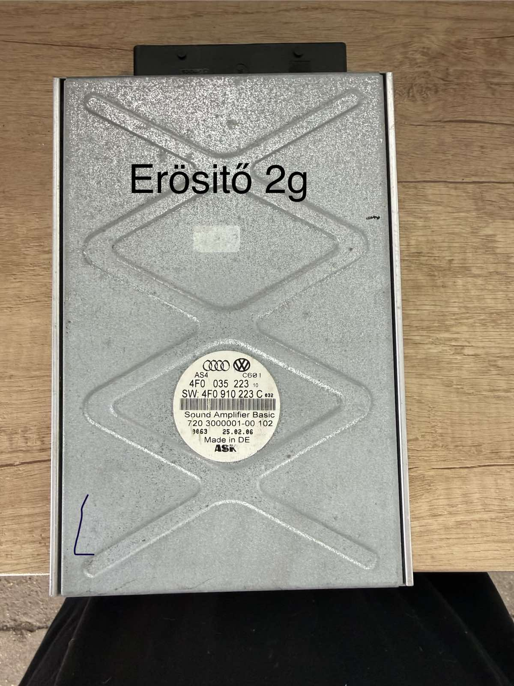
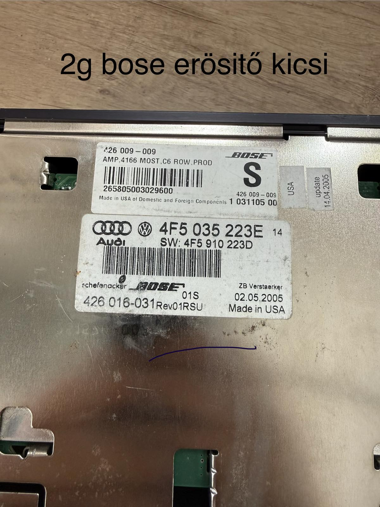
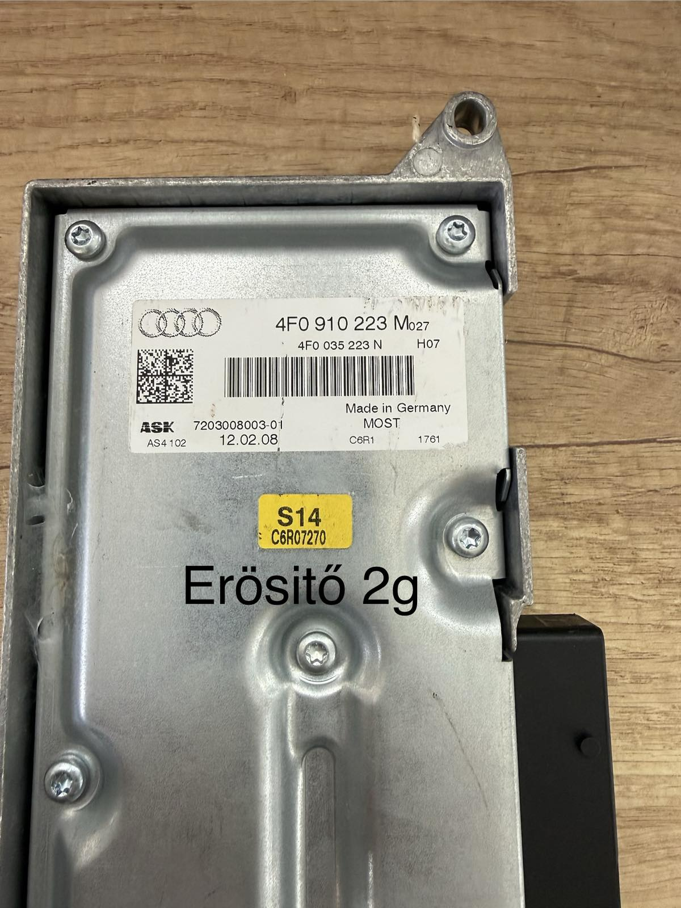
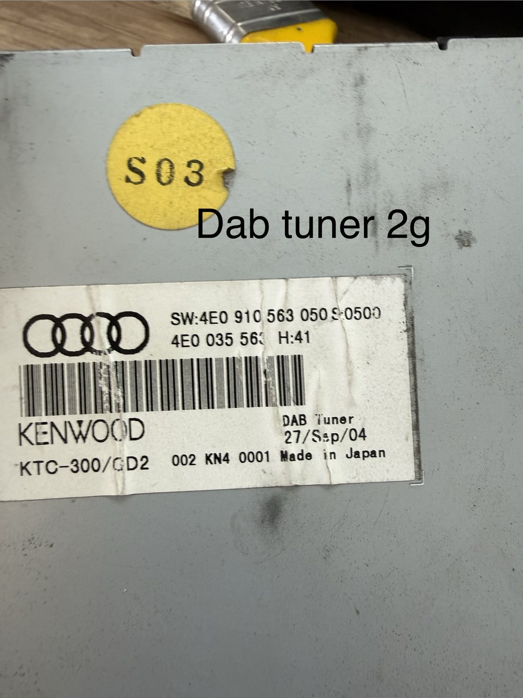
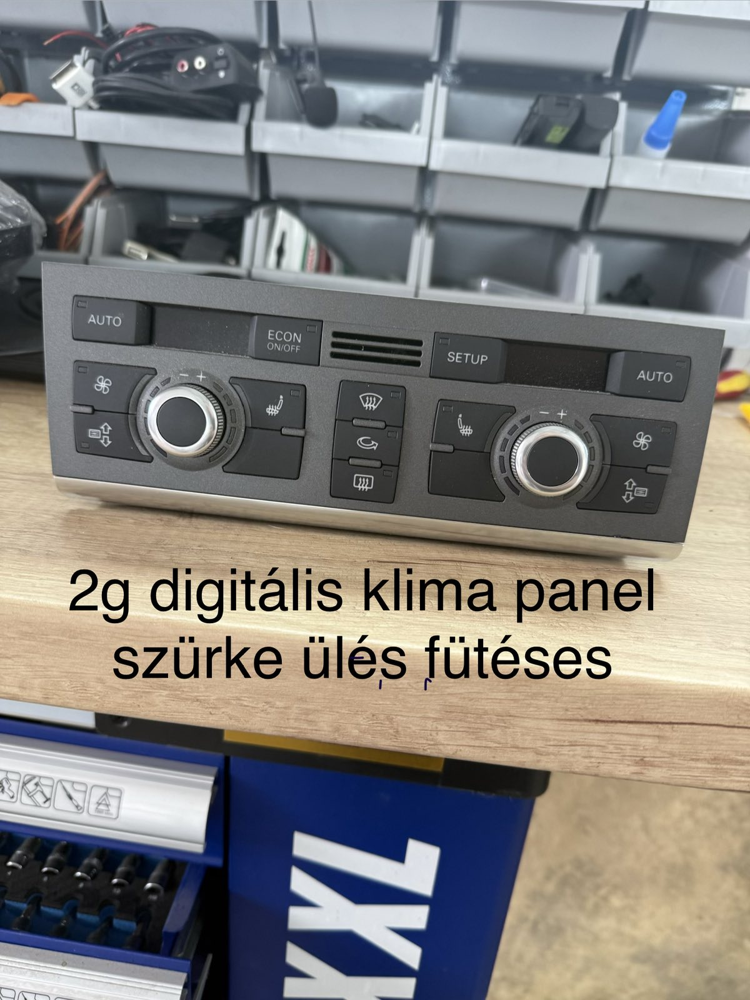
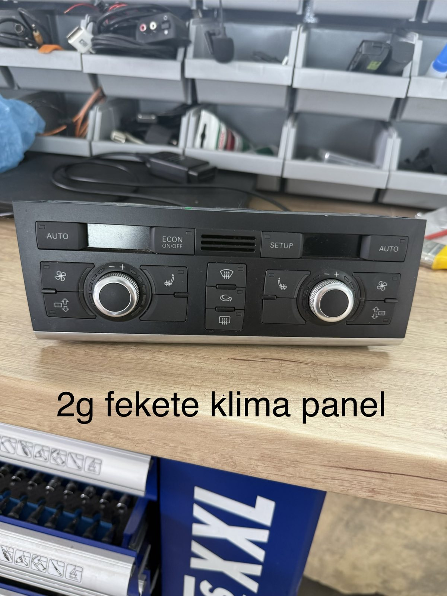
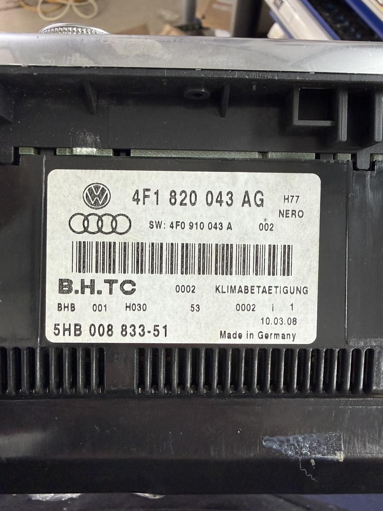
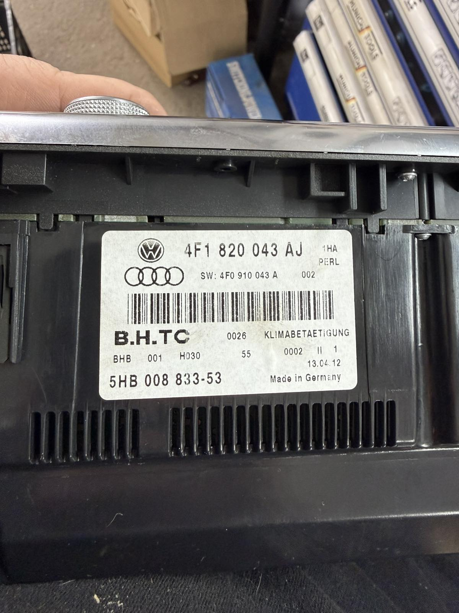

ERŐSÍTŐ
MMI 2G erősítő
Audi / ASK Sound Amplifier.
20.000 Ft
Aktuálisan elérhető használt MMI 2G alkatrészek. Érdeklődésnél a képen látható cikkszámot add meg.

Audi / ASK Sound Amplifier.

Bose hangrendszerhez való erősítőegység.

Audi gyári erősítőegység.

Audi / Kenwood DAB tuner egység.

Ülésfűtéses kivitel.

Ülésfűtéses kivitel.

4F1 820 043 AG.

4F1 820 043 AJ.